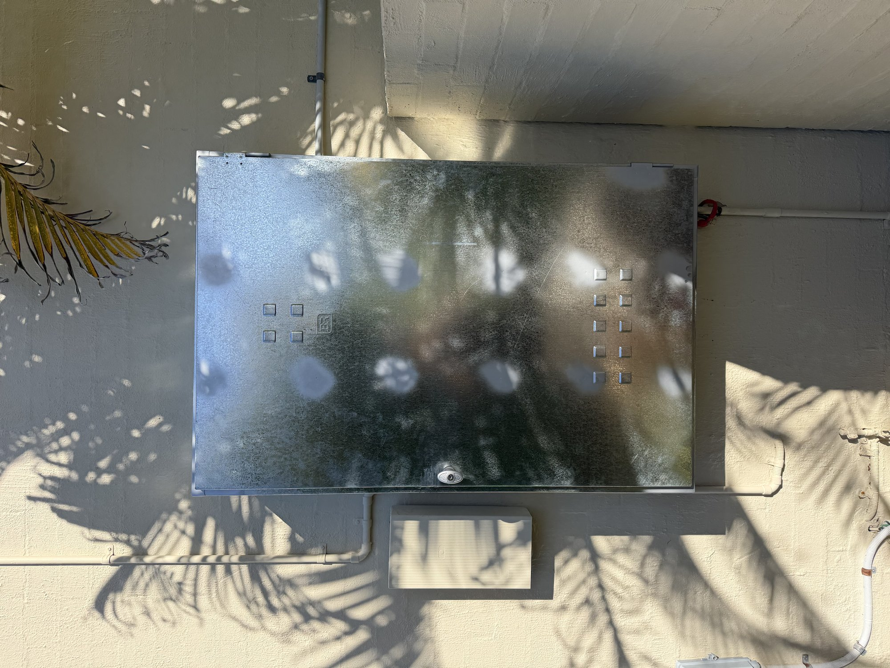
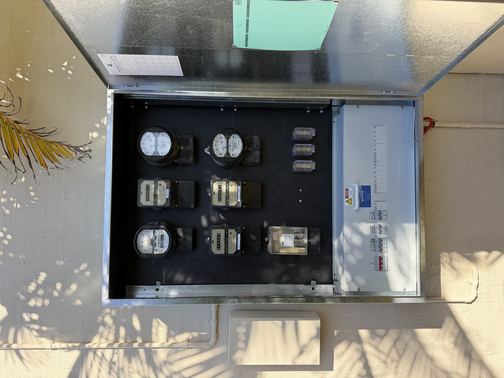
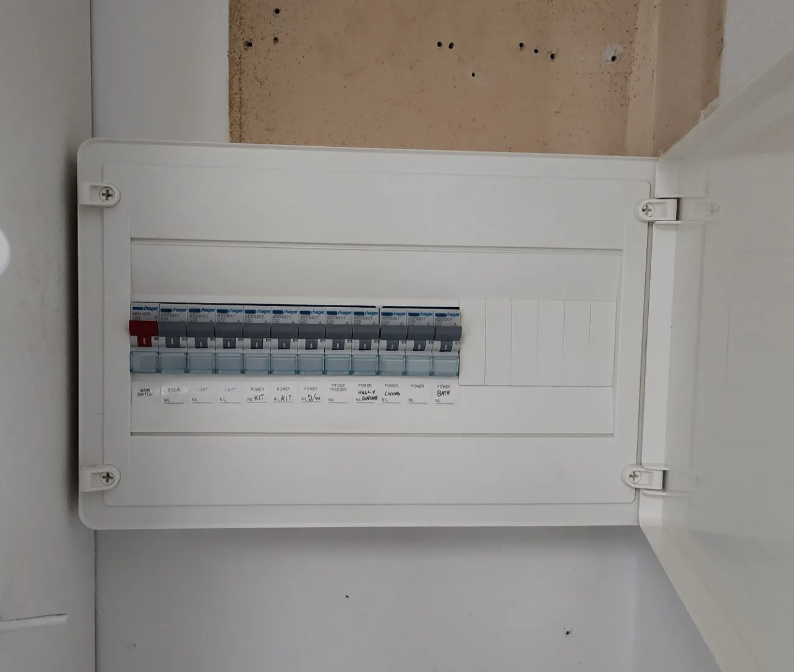

Before & After
Switchboard Upgrades — Real Noosa Jobs
Old fuse boxes and meter boards replaced with modern, compliant switchboards.
Before

After

Before

After

Fuse box playing up? Time for a proper upgrade. We replace old ceramic fuse boards with modern safety switches across Noosa and the Sunshine Coast.
If your home still has a ceramic fuse board — the type where you replace wire fuses when something trips — it's overdue for an upgrade. Old boards weren't designed for the electrical load of a modern home, and they lack the safety switch protection that Queensland now requires.
We upgrade switchboards all over Noosa every week. The job typically takes half a day: out with the old fuse board, in with a new panel fitted with circuit breakers and RCD safety switches. Every circuit is labelled clearly. The whole house is back up and running by lunch.
Most of our Noosa switchboard upgrades are booked for one of two reasons: the board keeps tripping and causing problems, or the homeowner is doing a renovation and their builder has told them the old board won't pass inspection. Either way, we make it straightforward.

Any one of these is reason enough to get it looked at.
If your board still has ceramic or porcelain fuses that you swap out when something trips, it's from a different era. Time for circuit breakers and safety switches.
A board that trips regularly under normal household load is either undersized or faulty. We'll assess it and let you know what needs to happen.
Most renovations require a switchboard upgrade to pass inspection — especially if you're adding a kitchen, bathroom, AC units or additional circuits.
Safety switches (RCDs) are required on all power and lighting circuits in QLD. If your board doesn't have them, it doesn't meet current standards.
Buyers and property managers increasingly check for a compliant switchboard. Upgrading before sale or listing can avoid delays and negotiations.
Solar inverters and EV chargers require dedicated circuits. If your board is already at capacity, an upgrade is part of the installation.
Every switchboard upgrade is slightly different, but the process is consistent. Here's what you can expect when Wave Electrical upgrades your Noosa switchboard:
The job typically takes 3–5 hours for a standard home. We clean up after ourselves and leave the board tidy and accessible.
QLD Electrical Contractors Licence No. 92717 — all switchboard work is fully licensed and certified.
Old fuse boxes and meter boards replaced with modern, compliant switchboards.
Before

After

Before
After
Call Steve for a quote — we're local, licensed, and usually available within a few days.